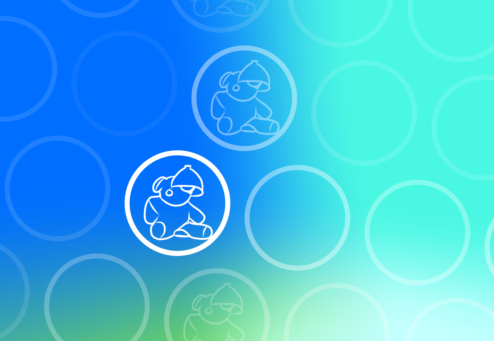

Projects

A cryptocurrency miner and wallet; based on the design described in the Bitcoin whitepaper.
Logistic regression model that predicts a company's debt rating based on financial reports.
Optimized storage solution to serve as a database for distributed blockchain applications.
Experience
Lead Developer
Popstand
Apr 2021 - Jan 2023
- Developed a role-playing game powered by the WAX blockchain; generated $170,000 in gross revenue and currently have 5000+ active members
- Helped existing projects reduce operating costs by transitioning from traditional databases to Google Firebase, introducing a suite of tools/services such as cloud functions, crash reporting, and realtime analytics
- Led group of four engineers to build a social cryptocurrency called DUST for Telegram and Discord, assisting developers to maintain quality standards while executing their scopes of work
- Audited 100+ Solidity and EOSIO smart contracts, identifying and resolving issues in 23% of reviewed contracts
Software Engineering Intern
Popstand
Jul 2020 - Mar 2021
- Developed backend infrastructure for an iOS/Android NFT portfolio application to interact with WAX, Ethereum, and Flow networks
- Proposed and implemented mining algorithm optimizations using a layer-2 Ethereum scaling solution called Polygon, improving transaction efficiency, scalability, and security
- Wrote proposals which secured $40,000 in funding from launch pads and angel investors, worked in business operations to maximize revenue streams
- Learned about the fundamental technologies within the blockchain space, exposed to smart contract languages and tools such as Solidity, web3.js, ethers.js, and Hardhat while strengthening skills in JavaScript and Python
Robotics Instructor
Robolink
Jun 2021 - Sep 2021
- Curated educational content about engineering and robotics for middle school and high school students
- Provided virtual and in-person instruction; specializing in computer vision and artificial intelligence
- Taught students the basics of developing and training machine learning models in Python using Tensorflow and Jupyter Notebook
Robotic Engineering Intern
Robolink
Nov 2019 - May 2021
- Developed artificial intelligence and self-driving algorithms for the Codrone Mini and Zumi (Robolink's Educational Robots
- Helped with unit/performance testing, wrote detailed reports, and presented findings to developers in United States and Korea
- Conducted virtual seminars on Robolink products for the Future of Education Technology Conference and the International Society of Technology in Education Conference
Skills
Languages
- C++
- Python
- Java
- JavaScript
- HTML
- CSS
Front-End
- React
- Material UI
Back-End
- Database Architecture
- Express
- Node.js
- MongoDB
- Google Firebase
iOS Development
- Swift UI
- UI Kit
DevOps
- AWS S3
- Docker
- Firebase
- Google Cloud
- Heroku
Other Tools/Services
- Figma
- Git
- Jupyter Notebook
- MATLAB
- Selenium
- Tensorflow